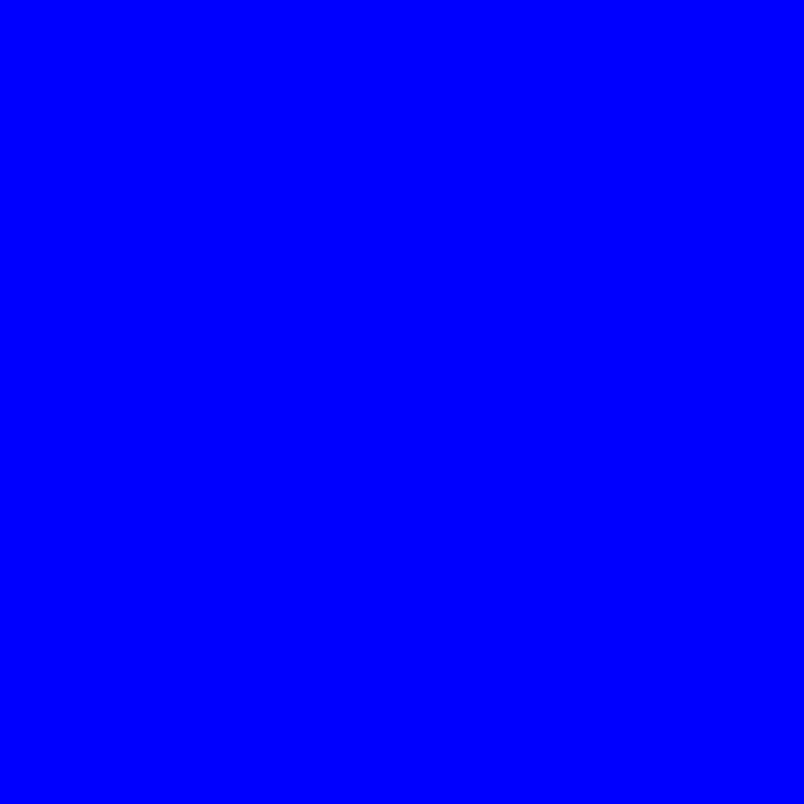

<!DOCTYPE html>
<html>
  <head>
    <title>My experiment</title>
    <script src="https://unpkg.com/jspsych@7.3.4"></script>
    <script src="https://unpkg.com/@jspsych/plugin-html-keyboard-response@1.1.3"></script>
    <script src="https://unpkg.com/@jspsych/plugin-image-keyboard-response@1.1.3"></script>
    <script src="https://unpkg.com/@jspsych/plugin-preload@1.1.3"></script>
    <link href="https://unpkg.com/jspsych@7.3.4/css/jspsych.css" rel="stylesheet" type="text/css" />
  </head>
  <body></body>
  <script>
  
  //^^ above already loaded in the libraries and plugins
  // need to initialize jspsych
  
    var jsPsych = initJsPsych({
      on_finish: function() {
        jsPsych.data.displayData();
      }
    });
  
  // bc experiments are defined by a timeline 
    var timeline = [];
  
  // preloading images before welcome trial b/c I will use the images (this uses the blue square)
    var preload = {
      type: jsPsychPreload,
      images: ['img/Solid_blue.svg.png', 'img/orange.png']
    };
    //preloading so can be used in the timeline
    timeline.push(preload);
  
//using html keyboard response plugin - welcome the participant
    var welcome = {
      type: jsPsychHtmlKeyboardResponse,
      stimulus: "Welcome to the experiment. Press any key to begin."
    };
    //pushing welcome trial to timeline
    timeline.push(welcome);
  
  //giving instructions:
  //this is where I changed the blue circle to a blue square 
  //made the blue square smaller changing its pixel sizes
  //couldn't get it back to how the original blue and orange cirle looked on the welcome page
    var instructions = {
      type: jsPsychHtmlKeyboardResponse,
      stimulus: `
         <p>In this experiment, a circle/square will appear in the center 
          of the screen.</p><p>If the square is <strong>blue</strong>, 
          press the letter F on the keyboard as fast as you can.</p>
         <p>If the circle is <strong>orange</strong>, press the letter J 
          as fast as you can.</p>
         <div style='width: 500px;'>
         <div style='float: left;'></img>
         <p class='small'><strong>Press the F key</strong></p></div>
         <div style='float: right;'></img>
         <p class='small'><strong>Press the J key</strong></p></div>
         </div>
         <p>Press any key to begin.</p>
      `,
      //adding 2ms gap after instructions
      post_trial_gap: 2000
     };
     //adding istructions trial to timeline
    timeline.push(instructions);

//create pathway to each stimulus -> this is where the blue circle was changed into a blue square
    var test_stimuli = [
      { stimulus: "img/Solid_blue.svg.png", correct_response: 'f'},
      { stimulus: "img/orange.png", correct_response: 'j'}
    ];
    
//fixation cross for between trials -> want to present it for different amounts of time. 
 var fixation = {
      type: jsPsychHtmlKeyboardResponse,
      stimulus: '<div style="font-size:60px;">+</div>',
      choices: "NO_KEYS",
      trial_duration: function(){
    return jsPsych.randomization.sampleWithoutReplacement([250, 500, 750, 1000, 1250, 1500, 1750, 2000], 1)[0];
  },
  data: {
        task: 'fixation'
      }
    };

// set up another trial for the circle and square
  var test = {
      type: jsPsychImageKeyboardResponse,
      stimulus: jsPsych.timelineVariable('stimulus'), 
      choices: ['f', 'j'],
      data: {
        task: 'response',
        correct_response: jsPsych.timelineVariable('correct_response')
      },
      on_finish: function(data){
        data.correct = jsPsych.pluginAPI.compareKeys(data.response, data.correct_response);
      }
    };
  
  // changed size of orange circle to about half, it is smaller now
    var test = {
      type: jsPsychImageKeyboardResponse,
      stimulus: jsPsych.timelineVariable('stimulus'), 
      choices: ['f', 'j'],
      stimulus_width: 100,
      stimulus_height: 100,
      data: {
        task: 'response',
        correct_response: jsPsych.timelineVariable('correct_response')
      },
      //useful for debugging can see what was done in experiment
      on_finish: function(data){
        data.correct = jsPsych.pluginAPI.compareKeys(data.response, data.correct_response);
      }
    };
  
  //need to randomize and have more trials so add in randomize_order and repititions (looping through 2 entities 5 times -> 10 trials)
  var test_procedure = {
      timeline: [fixation, test],
      timeline_variables: test_stimuli,
      randomize_order: true,
      repetitions: 5
    };
    timeline.push(test_procedure);

//adding a debriefing block
var debrief_block = {
      type: jsPsychHtmlKeyboardResponse,
      stimulus: function() {
        var trials = jsPsych.data.get().filter({task: 'response'});
        var correct_trials = trials.filter({correct: true});
        var accuracy = Math.round(correct_trials.count() / trials.count() * 100);
        var rt = Math.round(correct_trials.select('rt').mean());
        
 return `<p>You responded correctly on ${accuracy}% of the trials.</p>
          <p>Your average response time was ${rt}ms.</p>`;      
      } 
      };

timeline.push(debrief_block);

//debriefing block for blue square
var debrief_block_blue = {
      type: jsPsychHtmlKeyboardResponse,
      stimulus: function() {
        var trials = jsPsych.data.get().filter({task: 'response', stimulus: 'img/Solid_blue.svg.png'});
        var correct_trials = trials.filter({correct: true});
        var accuracy = Math.round(correct_trials.count() / trials.count() * 100);
        var rt = Math.round(correct_trials.select('rt').mean());
        
 return `<p>You responded correctly on ${accuracy}% of the blue square trials.</p>
          <p>Your average response time for the blue square was ${rt}ms.</p>`;      
      } 
      };

timeline.push(debrief_block_blue);

//debriefing block for orange circle
var debrief_block_orange = {
      type: jsPsychHtmlKeyboardResponse,
      stimulus: function(){
        var trials = jsPsych.data.get().filter({task: 'response', stimulus: 'img/orange.png'});
        var correct_trials = trials.filter({correct: true});
        var accuracy = Math.round(correct_trials.count() / trials.count() * 100);
        var rt = Math.round(correct_trials.select('rt').mean());
        
 return `<p>You responded correctly on ${accuracy}% of the orange circle trials.</p>
          <p>Your average response time for the orange circle was ${rt}ms.</p>
          <p>Press any key to complete the experiment. Thank you!</p>`;      
      } 
      };

      
timeline.push(debrief_block_orange);

  
//telling jspsych to run the experiment 
  jsPsych.run(timeline);
  
  </script>
</html>